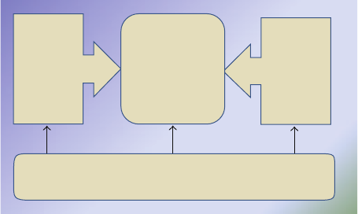
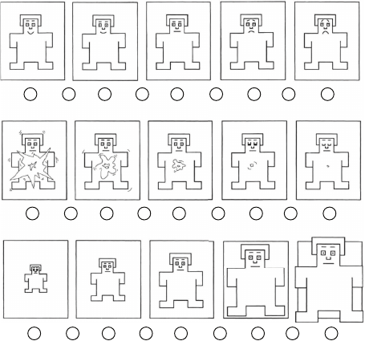
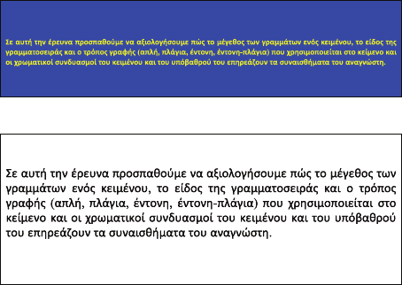
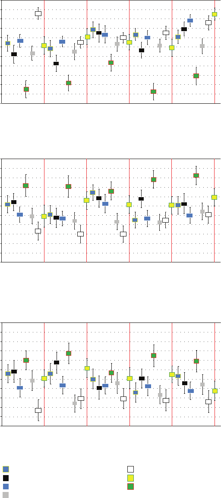
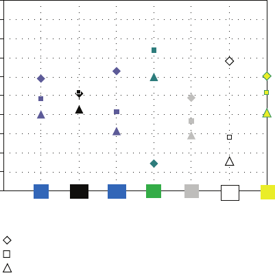
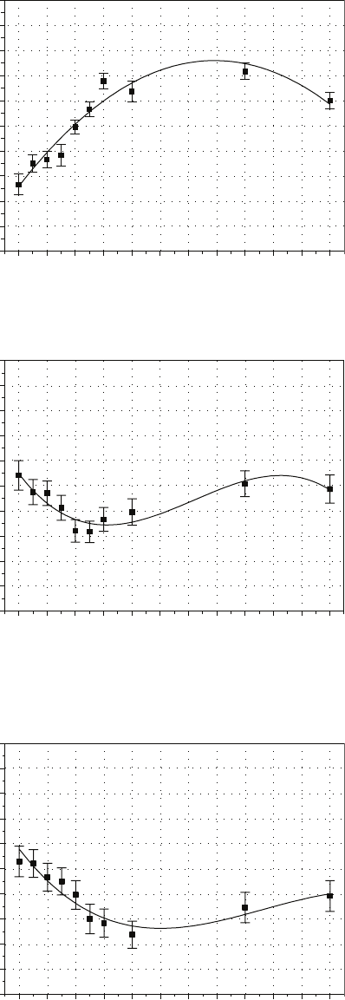

Hindawi Publishing Corporation
Advances in Human-Computer Interaction
Volume 2011, Article ID 206983, 18 pages
doi:10.1155/2011/206983
Research Article
Modeling Reader’s Emotional State Response on
Document’s Typographic Elements
Dimitr ios Tsonos and Georgios Kouroupet roglou
Department of Informatics and Telecommunications, National and Kapodistrian University of At hens,
Panepistimiopolis, 157 84 Athens, Greece
Correspondence should be addressed to Georgios Kouroupetroglou, koupe@di.uoa.gr
Received 30 July 2010; Revised 31 January 2011; Accepted 25 March 2011
Academic Editor: Kerstin S. Eklundh
Copyright © 2011 D. Tsonos and G. Kouroupetroglou. This is an open access article distributed under the Creative Commons
Attribution License, which permits unrestricted use, distribution, and reproduction in any medium, provided the original work is
properly cited.
We present the results of an experimental study towards modeling the reader’s emotional state variations induced by the
typographic elements in electronic documents. Based on the dimensional theory of emotions we investigate how typographic
elements, like font style (bold, italics, bold-italics) and font (type, size, color and background color), affect the reader’s
emotional states, namely, Pleasure, Arousal, and Dominance (PAD). An experimental procedure was implemented conforming to
International Affective Picture System guidelines and incorporating the Self-Assessment Manikin test. Thirty students participated
in the experiment. The stimulus was a short paragraph of text for which any content, emotion, and/or domain dependent
information was excluded. The Analysis of Variance revealed the dependency of (a) all the three emotional dimensions on font
size and font/background color combinations and (b) the Pleasure dimension on font type and font style. We introduce a set of
mapping rules showing how PAD vary on the discrete values of font style and font type e lements. Moreover, we introduce a set of
equations describing the PAD dimensions’ dependency on font size. This novel model can contribute to the automated reader’s
emotional state extraction in order, for example, to enhance the acoustic rendition of the documents, utilizing text-to-speech
synthesis.
1. Introduction
Most of the current Text-to-Speech systems do not take
into account the semantics and the cognitive aspects of
the visual (such as font and font style) and nonvisual
document elements. There is an effort towards Document-
to-Audio (DtA) synthesis, which essentially constitutes the
next generation of the Text-to-Speech systems, supporting
the extraction of the semantics of document metadata
[1] and the efficient acoustic representation of both text
formatting [2–5] and data tables [6–8] through the modeling
of the parameters of the synthesized speech signal by: (a)
combining alternative text insertion in the document text
stream, (b) altering the prosody, (c) switching between
voices, and/or (d) inserting nonspeech audio (like earcons)
in the waveform stream, according to the class of metadata
provided in the document.
Kouroupetroglou and Tsonos [9]proposedanauto-
mated reader’s emotional state extraction process derived
by the typographic elements and their acoustic rendition
using expressive speech synthesis. In order to facilitate the
automated reader’s emotional state extraction, the use of
a quantitative model that describes the way typ ographic
elements affect the reader’s emotional state is mandatory.
Most of the studies (presented in the following sections)
focus on the qualitative description of the way typographic
elements affect the reader’s emotional state and propose or
suggest how the typographic elements should be used while
creating a document (e.g., web pages, leaflets, and scientific
documents). They do not fulfill the requirements for a more
formal description using mathematical modeling in order to
be used in DtA synthesis and in other systems, such as those
presented in [10, 11].

2 Advances in Human-Computer Interaction
This work deals with the study and modeling of reader’s
emotional state response on typographic elements (font
type/color/size and font style) during the reading process
of electronic text documents. The results are expected to be
utilized for the automated reader’s emotional state extraction
and annotation of document’s typographic elements as pro-
posed by Tsonos et al. [12]. Thus, they can be incorporated in
methods and systems, such as the automated enhancement
of the acoustic presentation of documents using expressive
speech synthesis for the blind [13] or for people with other
disabilities [14], but also in Text-to-Speech (TtS) systems for
the general population (including the elderly) following a
design-for-all approach [9, 10].
The struc ture of the paper is as follows: in Section 2,
a background on typography and emotions is presented.
Section 3 describes how the current study extends previous
published work. A novel research model is introduced in
Section 4 using four hypotheses, followed by the experi-
mental procedure (Section 5). Section 6 presents the results
and Section 7 how the reader’s emotional state response
is modeled in each hypothesis along with a discussion of
the results. In the last section, some examples on how the
outcomes of the present study can be applied in the Human-
Computer Interaction field are pointed out.
This work extends the previous studies in the following
ways. A mathematical des cript ion (model) is introduced
towards automated emotional state extraction and anno-
tation of documents’ typographic elements. The results
are presented in a quantitative form (and not only in
qualitative, descriptive, or suggestive way). It proposes a
formal way (based on the International Affective Picture
System (IAPS) guidelines/Self-Assessment Manikin Test) to
examine, investigate,andmodel the reader’s emotional state
response on visual presentation of documents. Moreover,
the consistency of our methodology is studied compared
to previous work, that is, we examine whether language
and cultural aspects affect reader’s emotional state response on
typographic elements. The investigated typographic elements
are extended (adding bold and bold-italics), and a wide range
of font sizes are studied (contrary to other studies, e.g., using
2or3different font sizes).
2. Background on Typography and Emotions
According to the communication theorist McLuhan, a docu-
ment is the “medium” in which a “message” (information)
is communicated [15]. Printed or electronic documents
include books, newspapers, periodicals, journals, reports,
articles, letters, pamphlets, webpages, and e-mails. Besides
its content, a printed or electronic text document contains
a number of presentation elements that apply design glyphs
or typographic elements (i.e., visual representation of letters
and characters in a specific font and style) and arrange the
content on the page or even in the document itself. For
example, the title of a chapter can be recognized by placing it
at the top of the page and in larger font size than the body of
the text. Also, text color can be used to indicate emphasis in
aspecificpartofatextdocument.
Text document
Logical layer Content Layout layer
Typography layer
Figure 1: A general model of the text document architecture.
The presentation elements can be classified in three
layers according to the general model of the text document
architecture, presented in Figure 1.
(i) Logical layer: it associates content with architectural
elements such as headings, titles/subtitles, chapters,
paragraphs, tables, lists, footnotes, and appendices.
(ii) Layout layer: it associates content with architectural
elements relating to the arrangement on pages and
areas within pages, such as margins, columns, and
alignment.
(iii) Typog raphy laye r : it includes font (type, size, color,
background color, etc.) and font style such as bold,
italics, underline. (The term “plain” used in this work
indicates text of any font, but w ithout Font Style.)
These three layers are complementary and not indepen-
dent. For the scope of this work, typography (from the Greek
words τ
´
υπoσ (typos)
= form and γραϕ
´
η (graphy) = writing)
is the art and technique of writing words using different
forms of letters. Essentially it includes font (type, size, color,
background color, etc.) and font style (such as bold, italics,
underline) [16]. Typography can be applied to both the
logical and the layout layers of a document. For example, a
footnote (Logical layer) could be in italics or in smaller font
size than the body of the text. The vertical space in a text
block, called leading (Layout layer), can be affected by the
font type. Moreover, typography can be applied to the body
of the text directly, for example, a word in bold can be used
either for the introduction of a new term or to indicate a
person’s name.
The primary goal of utilizing presentation elements and
specifically typographic elements in text documents is to
distinguish parts of the text and to create a well-formed
presentation of the content in order, for instance, to augment
the reading performance or attract the reader. Authors use
typography in a specific way. For example, there are “strict”
typographic rules for the documents to be published in a
scientific journal. But in newspapers and magazines the page
manager, and not the authors, has the primary responsibilit y
for applying typography.

Advances in Human-Computer Interaction 3
During the past four decades, the evolution of computer
science and information technology brought out new per-
spectives for typogr aphy. Nowadays, the plethora of text doc-
uments are edited and stored in electronic format. Elect ronic
documents incorporate not only presentation layers but also
navigation tasks (e.g., searching for specific information in a
web page). By combining the functionalities of documents
and the capabilities provided by computer/information
technology, the traditional concept of typography has been
extended and has augmented the creation and presentation
possibilities for a document. New techniques have been
introduced for the document presentation in order, for
example, to convey ideas, messages, and emotions or to
enhance content.
Traditional factors that play a leading role in documents
formation and presentation include readability (the gauge
that measures how easily words, phrases, and blocks of
copy can be read) and legibility (the measure of easiness to
distinguish one letter from another in a particular typeface)
[17]. More recent factors include visual aesthetics and
accessibility.
Previous studies on emotions can be distinguished into
categorical (discrete emotions) and dimensional. Ekman
[18] developed a discrete emotions framework by defining
six basic emotions: anger, disgust, fear, joy, sadness, and
surprise. According to Bradley [19] and Bradley and Lang
[20] the emotional space includes a set of three dimensions:
pleasure (or valence), arousal, and dominance. Pleasure and
arousal are perceived as the two most prominent dimensions
[21]. The dimension of pleasure spans from negative to
positive emotional pole, and its middle represents the neutral
affect. The dimension of arousal varies from calm to highly
aroused pole [22]. But, the interdisciplinary field of emotion
studies has not yet come to an agreement on a theory of
emotion.
Theexperimentalproceduresthathavebeendeveloped
by psychologists to assess people’s/participants’ emotional
states include free-response measurements, forced choice
response measurements, as well as other psychophysical or
psychophysiological methods.
In free-response measurements the participants are asked
to respond with freely chosen labels or short expressions that
characterize the nature of the emotional state they experi-
enced during a specific experimental procedure. Instructors
and researchers face problems when applying this approach,
like in the cases where the participants use inappropriate
labels or wrong terms to express their emotions that may
constrain their responses. Additionally, it is quite difficult
to statistically analyze free responses [23]. Researchers tend
to sort numerous free responses into a small number of
emotion categories using synonyms and resemblances. This
is not a standard experimental procedure, but efforts have
been made towards standardizing the emotional labels.
Forced choice response measurements can be subdivided
into those based on either Discrete Emotions or on Emo-
tional Dimensions.
In the Discrete Emotions approach the participants are
asked to assess their emotions by verbal expressions that best
describe them on a 3- to 5-point scale or use an analogue
Figure 2: Manikins in the 9-point scale SAM test for the “Pleasure”
(first row), “Arousal” (second row), and “Dominance” (third row)
axes.
scale to indicate their intensity. Although there is a standard-
ized measurement procedure for this type of experiments,
many researchers prefer to develop their own emotional
categories. Such methods result in mismatched categories
that may present problems concerning the comparability of
the results [23]. There are also difficulties in cross-study
statistical analyses due to the abundance of missing data.
The participants in the Emotional Dimensions procedure
are asked to denote how positive (pleasant) or neg ative
(unpleasant) and how aroused (excited) or calm they feel.
The emotions can be mapped using the bidimensional space
of Pleasure-Arousal. This method seems more straightfor-
ward [23]. The bidimensional space could be estimated
under a variety of conditions, to characterize features of
emotion expression and their dependencies on external (e.g.,
environmental) and cognitive (e.g., personal significance)
factors [24]. Over and above, simple or advanced single-
study or cross-study statistical analyses can be obtained
contrar y to the Free Response and Discrete Emotion mea-
surements.
Following the Dimensional approach, Lang [25] intro-
duced the Self-Assessment Manikin test (SAM) to assess the
emotional states “Pleasure,” “Arousal,” and “Dominance” of
the participants (known also as the “PAD test”). Synonyms
are used for the expression of the PAD dimensions. “Plea-
sure” can be replaced by “valence” or “evaluation,” “Arousal”
by “activation” or “activity,” “Dominance” by “power” or
“potency.” The participants can choose between at least 5
selections of manikins. There are no verbal expressions to
assess their emotional states. In some studies [12, 26]larger
scales, from 9 to 25 points, are used. For example, on the
9-point scale (Figure 2) there are 5 image selections and 4
points as interval values between them. For the emotional
state of “Pleasure” the rating spans from a happy (smiling)
4 Advances in Human-Computer Interaction
manikin to an unhappy (frowning) one. For the “Arousal”
dimension the one pole is represented by a highly energetic
manikin and the other by a relaxed with eyes-closed one,
while for “Dominance” the controlled and in-control poles
are represented by a small and large manikin, respectively.
The answers of the participants can be transformed from
a point scale into a dimensional space of [
−1, 1] or
[
−100%, 100%]. By using the percentage scale one can easily
distinguish how much an emotional state has been varied
from the neutral state (the value “zero” represents the neutral
condition in all dimensions). Having a pictorial assessment,
rather than a verbal one, the SAM test becomes cross-
cultural and language independent [26]. The SAM procedure
has been broadly applied as a test for the assessment of
advertisements [27].
The three-dimensional space of emotional states can
describe and map the verbal expressions of discrete emo-
tions. A well-known example is Russell’s circumplex [23,
28]. The two dimensions of “Pleasure” and “Arousal” are
represented o n an X-Y gr id, respectively. Russell placed the
verbal expressions of the emotions on the grid in order to
present the description of the discrete emotions using the
dimensional approach. Another version of emotional grid is
the Geneva Emotion Wheel experimental tool [23, 29].
The emotional aspects of text documents are conveyed by
the semantics of either their content or their typography.
Content and Emotions. Several studies focus on the
semantics-based extraction and modeling of emotions from
the content of documents. Boucouvalas [30] demonstrated
a real-time application which enhances interpersonal
communication by detecting specific emotions (happiness,
sadness, anger, fear, disgust, and surprise) during text typing
and displaying them on the screen of the communication
partner through appropriate facial expression images. An
emotion extraction engine (Text-to-Emotion engine) based
on word tagging and sentence analysis has been developed by
Zhe et al. [31]. Liu et al. [32] studied the affect detection in
text. Wu et al. [33] presented a domain-dependent approach
towards the automatic three-state (happy, unhappy, and
neutral) emotional recognition from text (for the Chinese
language). Min and Park [34]proposedanumberof
distinct features of emotions derived from text (of the
Korean language) and their appropriate representation
using labels, duration, and intensity. Based on virtual or
physical avatars, Yang et al. [35] introduced the concept
of embodying textual messages (using simplified Chinese)
in order to e fficiently express nonverbal information, such
as human emotions embedded in the text. Gill et al. [36]
examined the ability of naive raters of emotion to detect
one of eight emotional categories from 50 and 200 word
samples of weblog text. Hancock et al. [37] researched
how people express and detect emotions during text-based
communication, that is, in a manner that eliminated the
nonverbal cues typically associated with emotions (such as
gestures, facial expressions, body posture, and biophysical
cues). Using supervised machine learning for text-based
emotion prediction, Alm [38] tried to classify the emotional
affinity of sentences in the narrative domain of children’s
fairy tales, with a view to incorporate the results in expressive
TtS synthesis. In their study they use the specific positively
and negatively surprised emotions: angry, disgusted, fearful,
happy, and sad.
Read [39] proposes a novel approach, based on the
language used in conjunction with emoticons, that can train
a classifier and function independent of the domain, topic,
and time. Cowie et al. [40] described an empirical approach
to identifying the kind of task that an emotion recognition
system could usefully address. Three levels of information are
elicited: a basic emotion vocabulary, a basic representation in
“evaluation-activation space” of the meaning of each word,
and a richer “schema” representation. They concluded that
the domain of emotion understanding can be represented
as a network involving nodes of many kinds. Owsley et al.
[41] proposed a set of techniques that can be used to classify
weblogs by emotional content. Instead of using a general-
purpose emotional classification strategy, their approach
aimed at generating domain-specific sentiment classifiers.
Lin et al. [42] classified news articles (of Chinese language)
into eight emotions invoking in their readers: happy, angry,
sad, surprised, heart warming, awesome, bored, and useful.
Typography and Emotions. Legibility and readability were
introduced as basic metrics of typographic clarity for both
printed and electronic documents presented on a computer
screen [43]. They are closely related to the typographic
elements typeface and font/background color combinations
[44, 45]. Readability is more related to the overall structure
or the page layout of a document [46] in English and [47–49]
in Danish, Swedish, Norwegian, and Finish. Hill and Scharf
[50] found that there is no one foreground/background
combination, font, or font style which leads to the best
readability. The aesthetics of a document play a significant
role during the reading process [51, 52 ].
The effect of document structure on reading comprehen-
sion and browsing has been studied by Calisir et al. [53]
for the Turkish. Text and background color combinations
in a web page have impact on its readability and aesthetics
[45, 50, 52]. Thus, an appropriately designed web document
can be reader friendly [54]. Hall and Hanna [45]investigated
the impact of text-background color combinations of web
pages on readability, retention, aesthetics, and behavioral
intention. A major finding is that the preferred chromatic
colors led to higher ratings of the aesthetic quality.
´
Ethier
et al. [55] examine the impact of interface features from
four websites on the cognitive process that triggered online
shoppers’ emotions, opera tionalized as mental states of
readiness that a rise from appraisal of events and considered
as direct antecedents to approach or avoidance behaviors.
That study focused on six specific emotions experienced
during interactions with a website that takes the form of
information transfer and communication processes.
Laarni [56] investigated the effects of color, font type,
and font style on user preferences. He concluded that (I)
the most readable combinations are (I.1) plain Times New
Roman black color font on white background, (I.2) italized
Advances in Human-Computer Interaction 5
Arial white font on blue background, and (I.3) plain Arial
white font on black background and (II) the least readable
combinations are the red font on green background. Also, he
examined the impact of color on document aesthetics (e.g.,
combinations of red font on green background were rated as
the most unpleasant, and black on white was considered the
least arousing).
Moreover, other studies showed how multiple combina-
tions of colors [57], font size, type, and style in a document
affect the reader’s emotional state [58–60] and the readability
of the document, not only in printed but also in electronic
format [61] . Tex tTo n e [ 62] is a system that adds emotions
to online textual communication by changing the attributes
of the typographic elements. Supported emotional tones
include: happy, very happy, upset, disappointed, angry, very
angry, shocked, confused, winky, tongue-in-cheek, embar-
rassed and “none” (the default no-tone option). TextTone
typographic elements embody: font size, font color, font
face, and whether the font style bold, italics, underline, and
strikethrough. Ohene-Djan et al. [63, 64] presented how
the alternations of typographic elements can be used to
convey emotions in subtitles, focusing on deaf and hearing-
impaired people. In their study they use the font-color and
font-size typographic elements and the emotions: happily,
sadly, sarcastically, excitedly, comically, fearfully, pleadingly,
questioningly, authoritatively, and angrily.
Yannicopoulou [65] examined how Greek preschoolers
recognize multimodal conventions of analogy, like the
increase of voice volume visualized by the letter size, or
conventional visual metaphors refer to different emotions.
Also, Rosenberger [66] introduced the “prosodic font”
that takes its temporal form from the emotionally specific
prosodic parameters of the speech. Actually, the prosodic
font emulates the tonal and rhythmic motion of the speaking
voice [67], and it is related to the dynamic and kinetic
typography.
3. How Present Work Extends
Previous Research
Laarni [56] followed the PAD approach in his study using
pseudotext, but his work exhibited two major limitations: the
results were restricted to the values of the emotional states
for each stimulus, and he provides suggestions only on how
specific typographic elements should or should not be used
(such as, red font on green background color combinations
should be avoided). Moreover, he studied the impact of only
the plain and italics font style element, although bold and
bold-italics are widely used (in some cases more frequently
than italics). Also, in his study the investigation of font size
is absent. Other researches (cf. [68, 69]) are investigating
specific values of font size and give suggestions for their use.
In the literature there is a debate concerning the use
of font type. Some believe that the use of Arial is more
preferable than the use of Times New Roman [69, 70].
But others [56] consider that Times New Roman is more
preferable. In the present work, we deal with how font type
affects reader’s emotional states, and we are adding our
contribution to the above debate.
Moreover,inthisstudy,wedeployanovelmodelof
the readers emotion variations induced by the typographic
elements font style (bold, italics, bold-italics) and font
elements (font/background color combinations, size, and
type).
4. Research Hypotheses
The research study investigated include four hypotheses
(H
i
, i = 1, 2,3, 4) for which the independent variables are
(i) font/background color combinations,
(ii) font size,
(iii) font type,
(iv) font style,
and the three emotional dimensions, “Pleasure,” “Arousal,”
and “Dominance” constitute the dependent variables.
Our first hypothesis is as the following.
Hypothesis 1. Font/background, font size, font type, and font
style affect Pleasure, Arousal, and Dominance.
We have chosen the following seven font-color on
background-color combinations: yellow on blue (Y/U),
white on black (W/B), white on blue (W/U), red on g reen
(R/G), black on gray (B/G), black on white (B/W), and green
on yellow (G/Y). We have selected the color combinations
proposed by Hill and Scharff [50] that have been also used
by Laarni [56].
In order to study how the font/background color com-
binations affect the emotional states using various font
types and font style elements, we investigate the following
combinations using 16 px (5.28 mm) font size text: plain,
bold and bold-italics for the case of Times New Roman and
bold, bold-italics for Arial.
Table 1 presents the font/background color combinations
used in this study: (a) in the Munsell perceptual color
space and (b) in RGB along with the corresponding bright-
ness/contrast values.
The values for the color brightness and contrast were
derived from the following recommendation of the World
Wide Web Consortium [71, 72]:
Brightness
=
R × 299 + G × 587 + B × 114
1000
,
Contrast
=|R
2
− R
1
| + |G
2
− G
1
| + |B
2
− B
1
|,
(1)
where R-red, G-green, B-blue are given in the RGB scale.
Therangeforthecolorbrightnessvaluesspansfrom
0 to 255 and for the contrast from 0 to 765. The W3C
recommendation for the minimum value of color brightness
is 125 and for color contrast is 500. Thus, black on white,
white on black, yellow on blue, and white on blue are
considered as high-contrast color combinations and red on
green,blackongray,andgreenonyellowareconsideredas
low contrast.
6 Advances in Human-Computer Interaction
Table 1: The font/background color combinations used in this study: (a) in t he Munsell perceptual color space and (b) in RGB along with
the corresponding brightness/contrast values.
(a)
Font/Background Color Combinations Font color Background color
Black on White N 0,0/0,0 8,6RP 9,8/0,6
White on Black 8,6RP 9,8/0,6 N 0,0/0,0
Yellow on Blue 0,2GY 9,5/12,7 7,0PB 3,2/29,4
Red on Green 7,9R 5,2/20,7 9,6GY 4,5/11,5
Black on Gray N 0,0/0,0 N 5,2/0,0
Green on Yellow 9,6GY 4,5/11,5 0,2GY 9,5/12,7
White on Blue 8,6RP 9,8/0,6 7,0PB 3,2/29,4
(b)
Font/Background color combinations
Font color Background color Color
R G B R G B Brightness Contrast
Black on White 0 0 0 255 255 255 255 765
White on Black 255 255 255 0 0 0 255 765
Yellow on Blue 255 255 0 0 0 255 197 765
Red on Green 255 0 0 0 128 0 1 383
Black on Gray 0 0 0 128 128 128 128 384
Green on Yellow 0 128 0 255 255 0 151 382
White on Blue 255 255 255 0 0 255 226 510
From the indicative results derived by other studies
(extensively presented and discussed in Section 7), in general,
high-color-contrast combinations are expected to be more
pleasant, calm and decrease the dominance level.
The second hypothesis of our study is as follows.
Hypothesis 2. FontsizesofblackTimesNewRomantexton
white background affect “Pleasure,” “Arousal,” and “Domi-
nance.”
Bernard et al. [69] showed that text at 12 pt size on a
computer display is significantly preferred compared to the
10 pt size. Schmidt et al. [73] concluded that increasing the
font size (from 7.5 pt to 14 pt) causes both user preference
and ease of interaction in web pages to rise. Alsumait et al.
[74] investigated the Arab children’s preferences while using
e-learning programs. They concluded that 14 pt font size
(compared to 12 pt) was more preferable and the Simplified
Arabic font type (easy and fast to read) and Arial (attractive)
were preferred among five font types.
Preserving the same font/background color combination
(black on white), font type (Times New Roman), and
font style, we examine variations of the three emotional
dimensions with respec t to the following font sizes (in
parentheses the physical height of the corresponding font size
is given): 10 px (3.3 mm), 11 px (3.63 mm), 12 px (3.96 mm),
13 px (4.29 mm), 14 px (4.62 mm), 15 px (4.95 mm), 18 px
(5.94 mm), 26 px (8.58 mm), and 32 px (10.56 mm). These
font sizes have been selected as the most frequently occur-
ring, after a statistical analysis conducted on the corpus
presented in [12].
Our third hypothesis is as the following.
Hypothesis 3. The font type, using plain, bold, italics or bold-
italics, affects “Pleasure,” “Arousal,” and “Dominance.”
Bernard et al. [69] studied the user preference of Arial
and Times New Roman font types displayed on a computer
screen. He concluded that the most preferable font type is
Arial due to high level of readability on a computer screen.
However, results of the same work [69] indicated that the
57% of the participants used as everyday default font 12-
point Times New Roman, whereas only 8.6% used 12-point
Arial. Results of Ling and van Schaik [70] revealed that
participants showed a preference in Arial than in Times New
Roman font type.
In contradiction, Laarni’s [56] findings showed that
Times New Roman with black font color on white back-
ground is considered the most readable and most pleasant.
The font typ e Arial is considered the most pleasant and
readable in the cases of “white on blue italicized” and of
“white on black plain font/background color combinations.”
Furthermore, for a pleasant and nonarousing color/font
combination he suggests the use of the following choices: (a)
white text on blue background plain Times New Roman and
(b) black on white italicized Times New Roman.
In our study, the investigated font type attributes are
Times New Roman and Arial on either plain, bold, italics,
or bold-italics text using black on white font/background
color combination and by controlling for font size by not
varying it among the stimuli (16 px). We have selected these
specific font types as they are the two most commonly used
font types from the Serif and Sans-Serif font type groups,
respectively. The selection of the specific font families derived
after conducting an extended statistical analysis on a corpus
Advances in Human-Computer Interaction 7
of English and Greek books and newspapers in pr inted and
electronic formats [12]. According to this statistical analysis
almost 83% of the text (black on white font/background
color combination) in the body of the documents is in Times
New Roman font type and only 17% is in Arial.
The rejection or not of Hypothesis 3 for each of the three
dimensions will reveal (a) the dependency of the emotional
states on the font type and (b) how the emotional states vary
betwee n font type alternation.
Our last hypothesis is the following .
Hypothesis 4. Font style, using Arial or Times New Roman,
affects “Pleasure,” “Arousal,” and “Dominance.”
As mentioned in Hypothesis 3, “black on white plain
Times New Roman” and “black on white italicized Times New
Roman” are good combination choices to induce the pleasant
emotion.
In our study, we use four font style attributes: plain,
bold, italics, and bold-italics with Times New Roman and
Arial font types, using black on white font/background color
combination and by retaining the same font size among the
stimuli (16 px). We examine (a) how font style affects the three
emotional states and (b) how these emotional states vary in the
case they are affected.
5. Method
Since the variations of the emotions and the emotional
states are continuous and nonextreme, we have selected
the dimensional approach and the Self-Assessment Manikin
test for the assessment of the emotions of the users.
An automated experimental procedure was desig ned and
implemented according to the International Affective Picture
System guidelines [75] for the paper and pencil version
of the SAM test. The experiment was carried out using a
computer; the stimuli were presented on an LCD display, and
the users’ answers/assessment were recorded directly on the
computer. A 17-inch Hewlett-Packard L1706 LCD monitor,
with a resolution of 1024
× 768 and a maximum luminance
of 300 cd/m
2
, was used for the study. The luminance of
the screen at the time of the tests was 140 cd/m
2
.Room
illuminance was 105 lux, measured with a digital illuminance
meter (E-SUN LX-101) at eye level of the observers, in
the vertical plane, and with the display turned off.The
distance between the monitor center and the subjects’ eyes
was 70
± 5cm.
(1) The participants fill ed out a form with the following
demographic information: age, gender, educational
level, any visual loss, and the daily usage of a
computer. The user also declared his/her consent to
participate in the experiment.
(2) Each stimulus was represented using a specific para-
graph of text with an emotionally neutral content.
(3) Each stimulus was presented to the participants in a
random order for a constant duration (15 seconds).
(4) After the presentation of each stimulus the user had
to follow the SAM test.
(5) The test answers were registered in such a way so that
they could be easily retrieved during the analysis stage
by the researchers.
The purpose of the experimental procedure was to assess
the emotional states of the participants after reading a
number of short text paragraphs presented on the screen in
various combinations of typog raphic elements. The duration
ofeachsessionwasapproximately20to30minutes.
During the experiment a researcher was present in order
(a) to provide supplementary explanations on the procedure
and (b) to supervise the proper execution of the experimental
process.
5.1. Participants. In the experimental procedure there were
30 participants, ranging from 18 to 33 years old (mean age
25.5). They were undergraduate or postgraduate students, 16
males, and 14 females, and their native language was Greek.
All of them have self-reported normal color vision and nor-
mal or corrected-to-normal visual acuity. Any prospective
participants with color blindness were excluded from the
experimental procedure.
5.2. Stimuli. The specific choices of the typographic ele-
ments of this study are analytically explained in Section 4.
There was a compromise not to include a greater number
of stimuli not to exhaust the participants. Forty-seven com-
binations of font and font style elements were investigated
using Greek text (a paragraph with approximately 46 words)
from which any content, emotion, and/or domain dependent
information were excluded (the paragraph was determined
as emotional ly neutral in the pilot study presented in [12]).
The text was analogous to one used by Hill and Scharff [50].
All the 47 stimuli were displayed in a random sequence
on a 17-inch LCD display with 1024
× 768 resolution, in full
screen mode, using 32 bit color depth and the MS Internet
Explorer Version 7. Figure 3 presents two samples of the
stimuli used in the experiments.
5.3. The Manikins. The SAM test applied includes three
9-scale manikin sets for the “Pleasure,” “Arousal,” and
“Dominance” emotional axes, respectively. Figure 2 illus-
trates the screen shot that was presented to each participant,
after the projection of a stimulus (the words “Pleasure,”
“Arousal,” and “Dominance” were not presented to the
participants). The participants had the possibility to assess
the induced emotional states (circles between manikins) for
each stimulus. This approach (9-scale SAM Test) was chosen
in order to achieve greater resolution on the results.
5.4. The Procedure. At the beginning of the experiment,
the participants were asked to read carefully the exact
instructions provided by the IAPS guidelines [75]andask
the instructor for possible clarifications. Then, they were
asked to fill in the electronic form with their personal
information and a declaration that they agree to take part
in the experiment. Afterwards, they participated in a demo
version of the experiment with a view to be familiarized with
the procedure.

8 Advances in Human-Computer Interaction
(a)
(b)
Figure 3: Sample stimuli as presented in the experimental proce-
dure. (a) Greek text in bold Times New Roman with font size 16 px
and (b) Greek text in Times New Roman with font size 26 px. The
translation of the text is: “In this study we are trying to assess how
font size, font type and font style (plain, italics, bold, bold-italics)
which are used in a text and the chromatic combinations of text and
its background affect reader’s emotions.”
Each stimulus was displayed for 15 seconds, and after
that, participants were asked to assess their emotional state
on the 9-point PAD scale using the manikins provided by the
SAM test.
Although SAM test is a rather standardized experimental
procedure, there might have been some doubts on the fact
the participants actually assessed their own emotional state,
but we believe that their effects are included in the statistical
error of the results.
6. Results
6.1. Hypothesis 1. The mean values and the standard error
of the results of the participants for each of the 35 stimuli
(numbered according to the following five groups) are
presented in Figure 4.
(i) Stimuli 1–7: Plain, Times New Roman (P/TR): Y/U
(Yellow on Blue), W/B (White on Black), W/U
(White on Blue), R/G (Red on Green), B/G (Black
on Gray), B/W (Black on White), G/Y (Green on
Ye llow).
(ii) Stimuli 8–14: Bold, Times New Roman (B/TR): Y/U,
W/B, W/U, R/G, B/G, B/W, G/Y.
(iii) Stimuli 15–21: Bold, Arial (B/A): Y/U, W/B, W/U,
R/G, B/G, B/W, G/Y.
(iv) Stimuli 22–28: Bold-Italics, Times New Roman
(BI/TR): Y/U, W/B, W/U, R/G, B/G, B/W, G/Y.
(v) Stimuli 29–35: Bold-Italics, Arial (BI/A): Y/U, W/B,
W/U, R/G, B/G, B/W, G/Y.
We have conducted three multifactorial repeated mea-
sures ANOVA (1 three-way and 2 two-way repeated measures
ANOVA) for each case of the dependent v ariable (“Pleasure,”
“Arousal,” and “Dominance”). In detail:
Three-Way ANOVA. We have conducted three-way repeated
measures ANOVA (for each dependent variable), using three
independent variables, font/background color combinations
(7 levels—chromatic combinations mentioned above), font
type (2 levels—Times New Roman and Arial), and font style
(2 levels—bold and bold-italics). The results (Table 2 )areas
follows.
(i) Pleasure: significant for font/background color com-
binations, F(6,24)
= 7.668, P<.05, font type,
F(1,29)
= 22.146, P<.05, and nonsignificant
for font style, F(1,29)
= 0.680, P>.05. The
interaction effect is significant for font/background
color combinations—font type, F(6,24)
= 7.406,
P<.05, font/background color combinations—font
style, F(6,24)
= 6.436, P<.05 and nonsignificant
for font type—font style, F(1,29)
= 0.785, P>
.05. The interaction between the three variables
(font/background color combinations—font type—
font style) is also significant, F(6,24)
= 5.213, P<.05.
(ii) Arousal: nonsignificant for font/background color
combinations, F(6,24)
= 1.950, P>.05, font type,
F(1,29)
= 0.321, P>.05 and font style, F(1,29) =
2.147, P>.05. The interaction effect is significant
for font/background color combinations—font type,
F(6,24)
= 5.408, P<.05, font/background color
combinations—font style, F(6,24)
= 4.481, P<.05
and nonsignificant for font t ype—font style, F(1,29)
= 1.416, P>.05. The interaction between the three
variables (font/background color combinations—
font type—font style) is also significant, F(6,24)
=
6.051, P<.05.
(iii) Dominance: significant for font/background color
combinations, F(6,24)
= 4.945, P<.05, font
style, F (1,29)
= 5.481, P<.05, and nonsignificant
for font type, F(1,29)
= 2.698, P>.05. The
interaction effect is significant for font/background
color combinations—font type, F(6,24)
= 5.559,
P<.05, font/background color combinations—font
style, F(6,24)
= 2.929, P<.05 and nonsignificant
for font type—font style, F(1,29)
= 0.334, P>
.05. The interaction between the three variables
(font/background color combinations—font type—
font style) is also significant, F(6,24)
= 2.917, P<.05.
Two-Way ANOVA. We have conducted two-way repeated
measures ANOVA for each dependent variable, using two
independent variables, font/background color combinations
(7 levels—chromatic combinations mentioned above), and
font style (3 levels—plain, bold and bold—italics for Times
New Roman and 2 levels–bold and bold-italics for Arial). The
results (Ta ble 3)areasfollows.

Advances in Human-Computer Interaction 9
YU
YU
YU
YU
YU
WB
WB
WB
WB
WB
WU
WU
WU
WU
WU
RG
RG
RG
RG
RG
BG
BG
BG
BG
BG
BW
BW
BW
BW
BW
GY
GY
GY
GY
GY
−0.6
−0.5
−0.4
−0.3
−0.2
−0.1
0
0.1
0.2
0.3
0.4
0.5
0 7 14 21 28
Pleasure
3
5
Number of stimulus
Plain/Times New Roman Bold/Times New Roman Bold/Arial
Bold-Italics/Arial
Bold-Italics/Times New Roman
(a)
YU
YU
YU
YU
YU
WB
WB
WB
WB
WB
WU
WU
WU
WU
WU
RG
RG
RG
RG
RG
BG
BG
BG
BG
BG
BW
BW
BW
BW
BW
GY
GY
GY
GY
GY
0 7 14 21 28 3
5
Number of stimulus
−0.6
−0.5
−0.4
−0.3
−0.2
−0.1
0
0.1
0.2
0.3
0.4
0.5
Arousal
Plain/Times New Roman Bold/Times New Roman Bold/Arial
Bold-Italics/Arial
Bold-Italics/Times New Roman
(b)
YU
YU
YU
YU
YU
YU
WB
WB
WB
WB
WB
WB
WU
WU
WU
WU
WU
WU
RG
RG
RG
RG
RG
RG
BG
BG
BG
BG
BG
BG
BW
BW
BW
BW
BW
BW
GY
GY
GY
GY
GY
GY
Yel l o w o n bl u e
White on black
Whiteonblue
Black on white
Greenonyellow
Redongreen
Blackongray
−0.6
−0.5
−0.4
−0.3
−0.2
−0.1
0
0.1
0.2
0.3
0.4
0.5
0 7 14 21 28 3
5
Number of stimulus
Dominance
Plain/Times New Roman Bold/Times New Roman Bold/Arial
Bold-Italics/Arial
Bold-Italics/Times New Roman
(c)
Figure 4: (a) Mean values and standard error of the results for all the text font/background color combination stimuli on the Pleasure axis.
(b) Mean values and standard error of the results for all the text font/background color combination stimuli on the Arousal axis. (c) Mean
values and standard error of the results for all the text font/background color combination stimuli on the Dominance axis.
10 Advances in Human-Computer Interaction
Table 2: Three-way repeated measures ANOVA results for each
dependent emotional dimension (PAD) on font/background color
combinations, font type, font style, and their interactions.
FPMSE
†
Pleasure
Font/Background
Color
F(6,24)
= 7.668 P<.05
∗
0.155
Font T ype
F(1,29) = 22.146 P<.05
∗
0.111
Font Style
F(1,29)
= 0.680 P>.05
∗∗
0.126
Font/Background
Color
∗ Font Type
F(6,24)
= 7.406 P<.05
∗
0.281
Font/Background
Color
∗ Font Style
F(6,24)
= 6.436 P<.05
∗
0.191
Font T ype ∗ Font
Style
F(1,29)
= 0.785 P>.05
∗∗
0.085
Font/Background
Color
∗ Font Type
∗ Font Style
F(6,24)
= 5.213 P<.05
∗
0.252
Arousal
Font/Background
Color
F(6,24)
= 1.950 P>.05
∗∗
0.200
Font T ype
F(1,29) = 0.321 P>.05
∗∗
0.112
Font Style
F(1,29)
= 2.147 P>.05
∗∗
0.151
Font/Background
Color
∗ Font Type
F(6,24)
= 5.408 P<.05
∗
0.290
Font/Background
Color
∗ Font Style
F(6,24)
= 4.481 P<.05
∗
0.404
Font T ype ∗ Font
Style
F(1,29)
= 1.416 P>.05
∗
0.076
Font/Background
Color
∗ Font Type
∗ Font Style
F(6,24)
= 6.051 P<.05
∗
0.212
Dominance
Font/Background
Color
F(6,24)
= 4.945 P<.05
∗
0.129
Font T ype
F(1,29) = 2.698 P>.05
∗∗
0.096
Font Style
F(1,29)
= 5.481 P<.05
∗
0.090
Font/Background
Color
∗ Font Type
F(6,24)
= 5.559 P<.05
∗
0.287
Font/Background
Color
∗ Font Style
F(6,24)
= 2.929 P<.05
∗
0.213
Font T ype ∗ Font
Style
F(1,29)
= 0.334 P>.05
∗∗
0.112
Font/Background
Color
∗ Font Type
∗ Font Style
F(6,24)
= 2.917 P<.05
∗
0.304
∗
Statistically significant,
∗∗
statistically nonsignificant,
†
Mean Square Error .
Pleasure
(i) Times New Roman: significant for font/background
color combinations, F(6,24)
= 5.552, P<.05,
and nonsignificant for font style, F(2,28)
= 0.265,
P>.05. The interaction effect is significant
for font/background color combinations—font style,
F(12,18)
= 8.749, P<.05.
Table 3: Two-way repeated measures ANOVA results for each
dependent emotional dimension (PAD) on Times New Roman or
Arial with font/background color combinations, font style, and
their interactions.
FPMSE
†
Pleasure
Times New Roman
Font/Background
Color
F(6,24)
= 5.552 P<.05
∗
0.170
Font Style
F(2,28) = 0.265 P>.05
∗∗
0.118
Font/Background
Color
∗ Font Style
F(12,18)
= 8.749 P<.05
∗
0.322
Arial
Font/Background
Color
F(6,24)
= 9.196 P<.05
∗
0.216
Font Style
F(1,29) = 2.312 P>.05
∗
0.079
Font/Background
Color
∗ Font Style
F(6,24)
= 2.652 P<.05
∗
0.240
Arousal
Times New Roman
Font/Background
Color
F(6,24)
= 2.795 P<.05
∗
0.186
Font Style
F(2,28) = 1.447 P>.05
∗∗
0.097
Font/Background
Color
∗ Font Style
F(12,18)
= 4.397 P<.05
∗
0.348
Arial
Font/Background
Color
F(6,24)
= 5.107 P<.05
∗
0.227
Font Style
F(1,29)
= 3.186 P>.05
∗∗
0.090
Font/Background
Color
∗ Font Style
F(6,24)
= 2.953 P<.05
∗
0.283
Dominance
Times New Roman
Font/Background
Color
F(6,24)
= 3.550 P<.05
∗
0.149
Font Style
F(2,28)
= 4.043 P<.05
∗
0.089
Font/Background
Color
∗ Font Style
F(12,18)
= 6.110 P<.05
∗
0.325
Arial
Font/Background
Color
F(6,24)
= 2.323 P>.05
∗∗
0.252
Font Style
F(1,29) = 1.934 P>.05
∗∗
0.077
Font/Background
Color
∗ Font Style
F(6,24)
= 1.818 P>.05
∗∗
0.214
∗
Statistically significant,
∗∗
statistically nonsignificant,
†
Mean Square Error.
(ii) Arial: significant for font/backg round color combi-
nations, F(6,24)
= 9.196, P<.05, and nonsignificant
for font style, F(1,29)
= 2.312, P>.05. The
interaction effect is significant for font/background
color combinations—font style, F(6,24)
= 2.652, P<
.05.
Advances in Human-Computer Interaction 11
Table 4: The mean values of “Pleasure” (a), “Arousal” (b), and
“Dominance” (c) on font size (using black Times New Roman text
on white background) with their Standard Errors.
Font Size (px)
Pleasure Arousal Dominance
Mean SE Mean SE Mean SE
10 −0.47 0.08 0.08 0.12 0.06 0.12
11
−0.30 0.07 −0.05 0.10 0.04 0.11
12
−0.27 0.07 −0.06 0.10 −0.07 0.11
13
−0.23 0.08 −0.18 0.10 −0.10 0.11
14
−0.01 0.05 −0.36 0.09 −0.21 0.11
15 0.13 0.06
−0.37 0.09 −0.40 0.12
16 0.36 0.06
−0.27 0.10 −0.43 0.11
18 0.28 0.08
−0.21 0.11 −0.53 0.11
26 0.43 0.07 0.02 0.10
−0.31 0.12
32 0.20 0.07
−0.03 0.10 −0.22 0.12
Mean SE 0.07 0.10 0.11
Table 5: Two-way repeated measures ANOVA results for each
dependent emotional dimension (PAD) on font style, font type
(using black on white font/background combination and 16 px font
size), and their interactions.
FPMSE
†
Pleasure
Font Style F(3,27)
= 4.033 P<.05
∗
0.106
Font T ype F(1,29)
= 0.477 P>.05
∗∗
0.066
Font Style
∗ Font Type F(3,27) = 4.150 P<.05
∗
0.129
Arousal
Font Style F(3,27
= 2.970 P>.05
∗∗
0.154
Font T ype F(1,29)
= 0.080 P>.05
∗∗
0.209
Font Style
∗ Font Type F(3,27) = 0.303 P>.05
∗∗
0.092
Dominance
Font Style F(3,27)
= 1.431 P>.05
∗∗
0.100
Font T ype F(1,29)
= 0.707 P>.05
∗∗
0.083
Font Style
∗ Font Type F(3,27) = 0.281 P>.05
∗∗
0.120
∗
Statistical significant,
∗∗
statistical nonsignificant,
†
Mean Square Error.
Arousal
(i) Times New Roman: significant for font/background
color combinations, F(6,24)
= 2.795, P<.05,
and nonsignificant for font style, F(2,28)
= 1.447,
P>.05. The interaction effect is significant
for font/background color combinations—font style,
F(12,18)
= 4.397, P<.05.
(ii) Arial: significant for font/backg round color combi-
nations, F(6,24)
= 5.107, P<.05, and nonsignificant
for font style, F(1,29)
= 3.186, P>.05. The
interaction effect is significant for font/background
color combinations—font style, F(6,24)
= 2.953, P<
.05.
Table 6: Mean values of font style and the percentage variations
from plain text using Arial (a) or Times New Roman (b) on
“Pleasure” with their Standard Errors.
(a)
Arial
Mean % variation from plain SE of Mean
Plain 0.13 — 0.05
Bold 0.10
−30.05
Italics 0.33 20 0.07
Bold-Italics 0.26 13 0.08
(b)
Times New Roman
Mean % variation from plain SE of Mean
Plain 0.36 — 0.06
Bold 0.05
−31 0.06
Italics 0.17
−19 0.06
Bold-Italics 0.15
−21 0.07
Dominance
(i) Times New Roman: significant for font/background
color combinations, F(6,24)
= 3.55, P<.05, and
for font style, F(2,28)
= 4.043, P<.05. The
interaction effect is significant for font/background
color combinations—font style, F(12,18)
= 6.11, P<
.05.
(ii) Arial: nonsignificant for font/background color com-
binations, F(6,24)
= 2.323, P>.05, and for font
style, F(1,29)
= 1.934, P>.05. The interaction
effect is nonsignificant for font/background color
combinations—font style, F(6,24)
= 1.818, P>.05.
In general, we observe that ANOVA yielded an effect
for all three dimensions (namely, “Pleasure,” “Arousal,” and
“Dominance”) by the font/background color combinations.
In Section 7 we further extend the discussion of the
results according to H1a, H1b, and H1c.
6.2. Hypothesis 2. One-way repeated measures ANOVA was
conducted (for each emotional state) to determine whether
or not there are significant differences in the mean emotional
state scores while changing the font size (10 levels).
(i) “Pleasure”: The results were significant, F(9,21)
=
21.382, P<.05 (Mean Square Error = 0,328).
(ii) “Arousal”: The results were significant, F(9,21)
=
3.359, P<.05 (Mean Square Error = 0,398).
(iii) “Dominance”: The results were significant, F(9,21)
=
6.092, P<.05 (Mean Square Error = 0,354).
Thus, the font size does affect emotional dimensions
and Hypothesis 2 is verified on “Pleasure” (H2a), “Arousal”
(H2b), and “Dominance” (H2c).
12 Advances in Human-Computer Interaction
Table 7: Polynomial coefficients for the modeling of PAD relationship on text size using (2) with their standard errors.
Pleasure Arousal Dominance
SE SE SE
Intercept −2.45287 0.30771 3.58459 0.73588 2.85307 0.77138
B
1
0.24942 0.03299 −0.59264 0.12133 −0.41265 0.12828
B
2
−0.00523 0.00077 0.02866 0.00632 0.01631 0.0067
B
3
00−0.000427 0.0001029 −0.00019986 0.0001093
Adjusted R-Square 0.90687 0.78103 0.84705
Follow-up tests using pairwise comparison (Tukey test)
denoted significant differences between font sizes, for exam-
ple, for font size 10 px and 14 px, the mean values of Pleasure
are significantly different (P
= .000121 <.05).
Table 4 presents the mean values of the answers on each
size along with their standard errors. In detail, we observe
that while increasing the font size, the “Pleasure” dimension
is increasing up to 26 px. For values greater than 26 px, there
is an inclination to be diminished. In contradiction, the value
of the “Arousal” dimension is decreasing up to 15 px font size
and the “Dominance” dimension up to 18 px. Beyond these
values there is a tendency for the “Arousal” and “Dominance”
to be increased.
6.3. Hypotheses 3 and 4. Two-way repeated measures
ANOVA was conducted to determine whether or not there
are significant differences in the mean emotional state
scores when changing the font type (Arial and Times New
Roman—2 levels) using different font style elements (plain,
bold, italics, and bold-italics—4 levels) using black font color
on white background with 16 px font size: the results are
presented in Tab le 5.
The measured variations for Hypothesis 3 (plain text) are
as follows:
(i) Arial-Pleasure: Mean
= 0.13 (SE of Mean = 0.05).
(ii) Times New Roman-Pleasure: Mean
= 0.36 (SE of
Mean
= 0.06).
The interaction revealed that using Times New Roman
instead of Arial on plain text increases pleasantness by 23%.
All other cases (“Pleasure” using bold, italics, bold-italics,
“Arousal” using plain, bold, italics, bold-italics, and “Dom-
inance” using plain, bold, italics, bold-italics) are statistically
nonsignificant. Thus, Hypothesis H3 is supported only for
the case of plain text on “Pleasure” (H3a).
Hypothesis 4 (H4) was not verified for the cases of
“Arousal” (H4b) and “Dominance” (H4c). The ANOVA
revealed the affection of font style elements on “Pleasure”
(H4a).
The above results forced us to distinguish the variations
of font style, while using Arial and Times New Roman,as
follows (Tables 6aand6b, resp.).
Arial. Considering the plain text as the baseline we can
observe that the use of bold text marginally decreases the
“Pleasure” dimension by 3%, while italics and bold-italics
increase it by 20% and 13%, respectively. Changing the font
Font/background
color
Font size
Font type
Font style
Dominance
Pleasure
Arousal
H1
a
b
c
H2
a
a
a
b
c
H3
H4
Figure 5: The proposed model for the relations between the inde-
pendent variables on the three emotional dimensions “Pleasure”,
“Arousal”, and “Dominance”.
style elements increases the “Pleasure” dimension (except in
the case of bold).
Times New Roman. in this case, all font style variations
decrease “Pleasure”: bold text by 31%, italics by 19%, and
bold-italics by 21%.
7. Discussion and Modeling of the Results
Following the ANOVA of the results described above, we
can propose a general model (Figure 5) for the relations
between the independent variables on the three emotional
dimensions “Pleasure,” “Arousal,” and “Dominance.”
Hypothesis 1. The scatter of “Pleasure,” “Arousal,” and
“Dominance” on each color combination is presented in
Figure 6, which facilitates the comparison of their mean
values and the discussion of the current results.
The major findings are as follows.
(i) Not any emotional extremes were observed.
(ii) Black text on white background, white on blue, and
green on yellow combinations were rated as the most
pleasant combinations.
(iii) Black on white is considered as the least arousing
combination.

Advances in Human-Computer Interaction 13
YU
WB
WU
RG
BG
BW
GY
−0.5
−0.4
−0.3
−0.2
−0.1
0
0.1
0.2
0.3
0.4
0.5
01234567
Pleasure
Arousal
Dominance
Figure 6: The mean values of each color combination for
“Pleasure”, “Arousal”, and “Dominance”. The code numbers in X-
axis are 1 for Yellow on Blue, 2 for White on Black, 3 for White on
Blue, 4 for Red on Green, 5 for Black on Gray, 6 for Black on White,
and 7 for Green on Yellow.
(iv) Red text font color on green background is the least
pleasant and most arousing color combination.
Moreover, Hall and Hanna [45] showed that color
combinations with higher levels of contrast, including the
color blue, receive higher ratings in readability and aesthetics.
The high-contrast-color combinations (black on white,
white on black, yellow on blue, and white on blue) lead to
higher values on the “Pleasure” dimension (H1a) and lower
values on the “Arousal” and “Dominance” (H1b and H1c),
respectively. But there are some deviations from the expected
values.
(i) White on black (high-contrast color combination)
results in higher values on the “Arousal” dimension
than the expected.
(ii) Black on gray (low contrast color combination)
results in lower values on the “Arousal” and “Dom-
inance” dimensions.
(iii) Green on yellow (low contrast color combination)
results in higher values on the “Pleasure” dimension
and lower values on the “Dominance”. This effect is
in agreement with similar findings by Laarni [56].
The current results are consistent with those presented
in [56]: (a) the font/background color combinations affect
“Pleasure”, “Arousal,” and “Dominance”. (b) “Red on green”
is considered as the most unpleasant combination and also
elicited the highest arousal reactions. (c) “Black on white”
has the lowest mean arousal level. (d) “White on blue”
and “green on yellow” are the most pleasant combinations.
Both the results of this work and those in [56]were
derived with the SAM test, but based on participants with
linguistic and cultural differences, indicating that the affect
of text/background color combinations used in typography
on PAD is possibly language and culture independent. This
assumption has to be further examined (using the same or
similar methodology) across other non-Western languages
and c ultures. There are indications for the consistency of
the results in Arabic language [74, 76]. Also Cyr et al. [77]
concluded that there are some similarities in the web site
color scheme reactions across cultures (Canadian, German,
and Japanese), but some differences hav e to be considered.
For instance, the three cultures tended to dislike the yellow
color scheme websites. Germans had the most pronounced
preference for the blue color scheme, and Canadians appreci-
ated the gray color scheme more than Germans and Japanese.
Hypothesis 2. Based on the results of the current work
(Table 2 ), we can model the PAD relationship on text size
using the following equation:
f
{d}
(
s
)
= B
{d}
3
· s
3
+ B
{d}
2
· s
2
+ B
{d}
1
· s +Intercept
{d}
,
(2)
where d: P, A,orD; P:Pleasurein[
−1, 1]; A:Arousalin
[
−1, 1]; D: Dominance in [−1, 1]; B
1
, B
2
,andB
3
are the
polynomial coefficients; and s:Fontsizeinpx.
Table 7 presents the constants of the polynomial fittings
after applying the statistical package Origin 8.0 [78]on
(2). The results indicate that “Pleasure” versus “Font Size”
can be described using a second-degree equation, and
“Arousal” and “Dominance” can be described using a third-
degree equation. The adjusted R-square is the measure of
correctness of the fitting.
The application of the above model for “Pleasure”,
“Arousal”, and “Dominance” versus “Font Size” is graphically
displayed in Figures 7(a), 7(b),and7(c),respectively.
The above results are consistent with those of Bernardini
et al. [68], who noted that the preference emotional level
decreases not only using smaller font size but also using
larger font size.
Hypotheses 3 and 4. In our study we found that only the
“Pleasure” dimension was affected by font style and font
type. But we have to take into account the fact that the
variations of the emotional dimensions were not extreme on
the variations of font type and font style.
7.1. Modeling the Mapping of Typographic Elements into
Emotional States. The results of this work indicate that the
values of the typographic elements can have either discrete
(e.g., font style) or continuous values (e.g., font size). If P
(Pleasure), A (Arousal), and D (Dominance) are used as
the dependent variables, the mapping of the typographic
elements into emotional states can be modeled using linear
equations (e.g., P
= a
P
1
·x +b
P
) or single variable polynomial
equations of the type
f
{d}
(
x
)
= a
{d}
n
· x
n
+ ···+ a
{d}
3
· x
3
+ a
{d}
2
· x
2
+ a
{d}
1
· x + b
{d}
(3)

14 Advances in Human-Computer Interaction
10 12 14 16 18 20 22 24 26 28 30 32
−1
−0.8
−0.6
−0.4
−0.2
0
0.2
0.4
0.6
0.8
1
Pleasure
Font size (px)
(a)
10 12 14 16 18 20 22 24 26 28 30 32
−1
−0.8
−0.6
−0.4
−0.2
0
0.2
0.4
0.6
0.8
1
Font size (px)
Arousal
(b)
10 12 14 16 18 20 22 24 26 28 30 32
−1
−0.8
−0.6
−0.4
−0.2
0
0.2
0.4
0.6
0.8
1
Font size (px)
Dominance
(c)
Figure 7: (a) Modeling “Pleasure” versus “Font Size” with (2).
(b) Modeling “Arousal” versus “Font Size” with (2). (c) Modeling
“Dominance” versus “Font Size” with (2).
or multiple variable polynomial equations of the form
f
{d}
(
x
)
= a
{d}
n
· x
n
+ ···+ a
{d}
3
· x
3
+ a
{d}
2
· x
2
+ a
{d}
1
· x
1
+ b
{d}
.
(4)
Equations (3)and(4) can be described in the form of
E
= A · X + B,(5)
where
E
=
⎡
⎢
⎢
⎢
⎣
P
A
D
⎤
⎥
⎥
⎥
⎦
, X =
⎡
⎢
⎢
⎢
⎢
⎢
⎢
⎢
⎢
⎢
⎢
⎣
x
x
2
x
3
.
.
.
x
n
⎤
⎥
⎥
⎥
⎥
⎥
⎥
⎥
⎥
⎥
⎥
⎦
or X =
⎡
⎢
⎢
⎢
⎢
⎢
⎢
⎢
⎢
⎢
⎢
⎣
x
1
x
2
x
3
.
.
.
x
n
⎤
⎥
⎥
⎥
⎥
⎥
⎥
⎥
⎥
⎥
⎥
⎦
,
A
=
⎡
⎢
⎢
⎢
⎣
a
P
1
a
P
2
a
P
3
··· a
P
n
a
A
1
a
A
2
a
A
3
··· a
A
n
a
D
1
a
D
2
a
D
3
··· a
D
n
⎤
⎥
⎥
⎥
⎦
, B =
⎡
⎢
⎢
⎢
⎣
b
P
b
A
b
D
⎤
⎥
⎥
⎥
⎦
,
(6)
and E(3
× 1) describes the three dimensions of “Pleasure”,
“Arousal,” and “Dominance”. X(n
× 1) describes the inde-
pendent variable(s). A(3
× n) describes the factors of the
independent variable(s). B(3
× 1) is the offset.
The above equations are valid for continuous values of
typographic elements. In the case where the values of the
typographic elements are discrete, (5) is converted into
E
i
= B
i
,(7)
where
E
i
=
⎡
⎢
⎢
⎢
⎣
P
i
A
i
D
i
⎤
⎥
⎥
⎥
⎦
, B
i
=
⎡
⎢
⎢
⎢
⎣
b
i,P
b
i,A
b
i,D
⎤
⎥
⎥
⎥
⎦
(8)
i
∈ Q where Q corresponds to the values of the typographic
elements.
These two cases can be explained using the following
examples.
Example 1. Suppose the model is described by (2)
P
=−0.00523 · x
2
+0.24942 · x − 2.45287
A
=−0.00042711 · x
3
+0.02866 · x
2
− 0.59264 · x +3.58459,
D
= 0.000199863 · x
3
+0.01631 · x
2
− 0.41265 · x +2.85307.
(9)
Advances in Human-Computer Interaction 15
This modeling can be represented using (5)by
E
=
⎡
⎢
⎢
⎢
⎣
P
A
D
⎤
⎥
⎥
⎥
⎦
, X =
⎡
⎢
⎢
⎢
⎣
x
x
2
x
3
⎤
⎥
⎥
⎥
⎦
,
A
=
⎡
⎢
⎢
⎢
⎣
0.24942 −0.00523 0
−0.59264 0.02866 −0.00042711
−0.41265 0.01631 0.000199863
⎤
⎥
⎥
⎥
⎦
,
B
=
⎡
⎢
⎢
⎢
⎣
−
2.45287
3.58459
2.85307
⎤
⎥
⎥
⎥
⎦
.
(10)
Example 2. Suppose the model describing the reader’s
emotional state variations on font style elements on Arial is
(i) Pleasure-plain: 0, bold:
−0.03, italics: 0.2, bold-
italics: 0.13;
(ii) Arousal-plain: 0, bold: 0, italics: 0, bold-italics: 0;
(iii) Dominance-plain: 0, bold: 0, italics: 0, bold-italics: 0.
The modeling can be represented using (7)as:
⎡
⎢
⎢
⎢
⎢
⎢
⎢
⎣
E
p
E
b
E
i
E
bi
⎤
⎥
⎥
⎥
⎥
⎥
⎥
⎦
=
⎡
⎢
⎢
⎢
⎢
⎢
⎢
⎣
B
p
B
b
B
i
B
bi
⎤
⎥
⎥
⎥
⎥
⎥
⎥
⎦
, E
p
=
⎡
⎢
⎢
⎢
⎣
P
p
A
p
D
p
⎤
⎥
⎥
⎥
⎦
, E
b
=
⎡
⎢
⎢
⎢
⎣
P
b
A
b
D
b
⎤
⎥
⎥
⎥
⎦
,
E
i
=
⎡
⎢
⎢
⎢
⎣
P
i
A
i
D
i
⎤
⎥
⎥
⎥
⎦
, E
bi
=
⎡
⎢
⎢
⎢
⎣
P
bi
A
bi
D
bi
⎤
⎥
⎥
⎥
⎦
, B
p
=
⎡
⎢
⎢
⎢
⎣
0
0
0
⎤
⎥
⎥
⎥
⎦
,
B
b
=
⎡
⎢
⎢
⎢
⎣
−
0.03
0
0
⎤
⎥
⎥
⎥
⎦
, B
i
=
⎡
⎢
⎢
⎢
⎣
0.2
0
0
⎤
⎥
⎥
⎥
⎦
, B
bi
=
⎡
⎢
⎢
⎢
⎣
0.13
0
0
⎤
⎥
⎥
⎥
⎦
.
(11)
8. Conclusions
In this work we h ave described the results of an exper-
imental study towards modeling the reader’s emotional
state variations derived by the typographic elements in
documents. Our main motivation was the effective acoustic
rendition of the typographic elements using expressive
speech synthesis. Based on the experimental results we
propose a set of mapping rules on how typographic elements,
such as font style (plain, italics, bold, and bold-italics),
and font elements (font/background color combinations,
font type, and font size) affect the reader’s emotional state.
Our study was based on the dimensional approach of
the emotions (namely “Pleasure”, “Arousal”, and “Domi-
nance”) and the experimental procedure was designed and
implemented according to IAPS experimental guidelines,
using the Self-Assessment Manikin test [75]. There are
indications that emotional states have similar affection and
variations across language and culture. This assumption
derives from the comparison of our experimental results
with those from similar studies for other languages and
cultures.
Some major findings of this work are as follows. As the
font size increases up to 26 px there is an increase on the
“Pleasure” dimension. From this value and higher there is
a decrease. In contradiction, “Arousal” and “Dominance”
decrease up to 15 px and 18 px, respectively. Beyond these
values there is an increase in both dimensions. The results
denoted that only “Pleasure” is affected by the font type.
Times Ne w Roman is considered more pleasant than Arial
(23% increase of “Pleasure” using plain text), and only
“Pleasure” is affected by font style elements.
Moreover, we introduced a model for the quantitative
representation of the results. We are using the polynomial
regression for the case of font size variations (continuous
values) and simple percentage variations for the case of font
type and font style (discrete values). Based on this modeling
and the need of implementing the rules for the automated
reader’s emotional state extraction [12], we propose a
generic mathematical description on how the variations of
the typographic elements can be mapped into emotional
state values. Future work can investigate and model other
combinations of typographic elements (e.g., study a greater
number of color combinations and font type/font style) and
even include the layout layer or/and the logical layer of text
documents.
The model we have proposed is not scalable. Moreover, it
matters whether the text is written on, for example, a paper
box, a newspaper, or on a bill board, on how the typography
is perceived. Thus, future work has to explore the context
effects on how the typography of a text presented on various
forms o f a computer screen is perceived.
Kouroupetroglou et al. [10] proposed the use of the
presented model (or models that derive by the proposed
future work) for the automated reader’s emotional state
extraction and annotation of an Open Document Format
(ODF) document. Thus, we are able to automatically add this
information (metadata) to an .odt file. This information can
be useful to, for example, a system that can automatically
aesthetically emotionally rate/rank a specific block of text
or even the entire document (obviously using the presented
or even more complex rules) in order to propose (to the
designer and/or developer) the improvement of the visual
presentation of the document.
Another proposed application is that, by adding the
metadata from the visual modality (reader’s emotional
state), we are able to convey this information into other
modalities, acoustic and/or haptic. For example, combining
this model (typog raphy to emotional state) and the acoustic
model introduced by Schr
¨
oder [79] (emotional state to
speech), we are able to convey the typogr aphic information
of a document to the acoustic modality using prosody
manipulation of a Text-to-Speech system, as presented in the
proposed architecture in [9, 80].
16 Advances in Human-Computer Interaction
Acknowledgments
The authors would like to thank Kalliopi Ikospentaki for
her valuable contribution and help during the statistical
analysis of the data. The work described in this paper
has been funded by (a) the European Social Fund and
Hellenic National resources under the HOMER project of the
PENED Programme, Greek General Secretariat of Research
and Technology and (b) the National and Kapodistrian
University of Athens, Special Account for Research Grants.
References
[1] F. Fourli-Kartsouni, K. Slavakis, G. Kouroupetroglou, and
S. Theodoridis, “A Bayesian network approach to semantic
labelling of text formatting in XML corpora of documents,” in
Proceedings of the Human-Computer Interaction International
(HCII ’07), vol. 4556 of Lecture Notes in Computer Science
(LNCS), pp. 299–308, 2007.
[2] G. Xydas and G. Kouroupetroglou, “Text-to-speech scripting
interface for appropriate vocalisation of e-texts,” in Proceedings
of the European Conference on Speech Communication and
Technology (EUROSPEECH ’01), pp. 2247–2250, 2001.
[3] G. Xydas and G. Kouroupetroglou, “Augmented auditory
representation of e-texts for text-to-speech systems,” in Pro-
ceedings of the 4th International Conference on Text, Speech
and Dialogue (TSD ’01), vol. 2166 of Lecture Notes in Artificial
Intelligence (LNAI), pp. 134–141, 2001.
[4] G. Xydas, D. Spiliotopoulos, and G. Kouroupetroglou, “Mod-
elling emphatic events from non-speech aware documents in
speech based user interfaces,” in Proceedings of the 10th Inter-
national Conference on Human-Computer Interaction (HCII
’03), pp. 806–810, Lawrence Erlbaum Associates, Mahwah, NJ,
USA, 2003.
[5] G. Xydas, V. Argyropoulos, T. Karakosta, and G. Kouroupet-
roglou, “An experimental approach in recognizing synthesized
auditory components in a non-visual interaction with docu-
ments,” in Proceedings of the 11th International Conference on
Human-Computer Interaction (HCII ’05), vol. 3, pp. 411–420,
Las Vegas, Nev, USA, 2005.
[6]D.Spiliotopoulos,G.Xydas,G.Kouroupetroglou,V.Argy-
ropoulos, and K. Ikospentaki, “Auditory universal accessibility
of data tables using naturally derived prosody specification,”
UniversalAccessintheInformationSociety,vol.9,no.2,pp.
169–183, 2010.
[7] D. Spiliotopoulos, G. Xydas, G. Kouroupetroglou, and V.
Argyropoulos,“Experimentationonspokenformatoftables
in auditory user interfaces,” in Proceedings of the 11th Interna-
tional Conference on Human-Computer Interaction (HCII ’05),
pp. 361–370, Las Vegas, Nev, USA, 2005.
[8] D. Spiliotopoulos, G. Xydas, and G. Kouroupetroglou, “Dic-
tion based prosody modeling in table-to-speech synthesis,” in
Proceedings of the International Conference on Text, Speech and
Dialogue (TSD ’05), vol. 3658 of Lecture Notes in Computer
Science (LNCS), pp. 294–301, 2005.
[9] G. Kouroupetroglou and D. Tsonos, “Multimodal accessibility
of documents,” in Advances in Human-Computer Interaction,
pp. 451–470, I-Tech Education and Publishing, Vienna, Aus-
tria, 2008.
[10] G. Kouroupetroglou, D. Tsonos, and E. Vlahos, “DocEmoX:
a system for the typography-derived emotional annotation of
documents,” in Proceedings of the International Conference on
UniversalAccessinHuman-ComputerInteraction, vol. 5616 of
Lecture Notes in Computer Science (LNCS), pp. 550–558, 2009.
[11] D. Tsonos and G. Kouroupetroglou, “Accessibility of board
and presentations in the classroom: a design-for-all approach,”
in Proceedings of the 4th IASTED International Conference on
Telehealth and Assistive Technologies (TAT ’08), pp. 13–18,
ACTA Press, April 2008.
[12] D. Tsonos, K. Ikospentaki, and G. Kouroupetrolgou, “Towards
modeling of readers’ emotional state response for the auto-
mated annotation of documents,” in Proceedings of the IEEE
World Congress on Computational Intelligence (WCCI ’08),pp.
3253–3260, Hong Kong, 2008.
[13] D. Freitas and G. Kouroupetroglou, “Speech technologies for
blind and low vision persons,” Technology and Disability, vol.
20, no. 2, pp. 135–156, 2008.
[14] K. Fellbaum and G. Koroupetroglou, “Principles of electronic
speech processing with applications for people with disabili-
ties,” Technology and Disability, vol. 20, no. 2, pp. 55–85, 2008.
[15] M. McLuhan and Q. Fiore, The Medium is the Message, Gingko
Press, Berkeley, Calif, USA, 2005.
[16] O. Briggs, S. Champeon, E. Costello, and M. Patterson,
Cascading Style Sheets: Separating Content from Presentation
,
Friends of ED, 2nd edition, 2004.
[17] W. Tracy, Letters of Credit: A View of Type Design,Gordon
Fraser, Jersey City, NJ, USA, 1986.
[18] P. Ekman, “An argument for basic emotions,” Cognition and
Emotion, vol. 6, no. 3, pp. 169–200, 1992.
[19] M. M. Bradley, “Measuring emotion: the self-assessment
manikin and the semantic differential,” Journal of Behavior
Therapy and Experime ntal Psychiatry, vol. 25, no. 1, pp. 49–59,
1994.
[20] M. M. Bradley and P. J. Lang, “Affective reactions to acoustic
stimuli,” Psychophysiology, vol. 37, no. 2, pp. 204–215, 2000.
[21] C. Dormann, “Affective experiences in the home: measuring
emotions,” in Proceedings of the International Conference on
Home Oriented Informatics and Telematics (HOIT ’03), Calif,
USA, 2003.
[22] T. Partala and V. Surakka, “The effects of affective inter-
ventions in human-computer interaction,” Interacting with
Computers, vol. 16, no. 2, pp. 295–309, 2004.
[23] K. R. Scherer, “What are emotions? and how can they be
measured?” Social Science Information, vol. 44, no. 4, pp. 693–
727, 2005.
[24] R. W. Picard, “Affective computing,” Tech. Rep. 321, M.I.T
Media Laboratory Perceptual Computing Section, 1995.
[25] P. J. Lang, “The cognitive psychophysiology of emotion: fear
and anxiety,” in Anxiety and the Anxiety Disorder, A. Tuma and
J. Maser, Eds., pp. 131–170, Lawrence Erlbaum, Mahwah, NJ,
USA, 1985.
[26] J. D. Morris, “Observations SAM: the self-assessment
manikin- An efficient cross-cultural measurement of emo-
tional response,” Journal of Advertising Research, pp. 63–68,
1995.
[27] R. P. Bagozzi, M. Gopinath, and P. U. Nyer, “The role of
emotions in marketing,” Journal of the Academy of Marketing
Science, vol. 27, no. 2, pp. 184–206, 1999.
[28]J.Posner,J.A.Russell,andB.S.Peterson,“Thecircum-
plex model of affect: an integrative approach to affective
neuroscience, cognitive development, and psychopathology,”
De velopment and Psychopathology, vol. 17, no. 3, pp. 715–734,
2005.
[29] T. B
¨
anziger, V. Tran, and K. Scherer, “The Geneva Emotion
Wheel: a tool for the verbal report of emotional reactions,”
Advances in Human-Computer Interaction 17
in Proceedings of the Conference of the International Society for
Research on Emotions (ISRE ’05), Bari, Italy, 2005.
[30] A. C. Boucouvalas, “Real time text-to-emotion engine for
expressive Internet communications,” in Being There: Con-
cepts, Effects and Measurement of User Presence in Synthetic
Environments,G.Riva,F.Davide,andW.IJsselsteijn,Eds.,vol.
5ofEmerging Communication: Studies on New Technologies
and Practices in Communication, pp. 306–318, IOS Press,
Amsterdam, The Netherlands, 2003.
[31] X. Zhe, D. John, and A. C. Boucouvalas, “Text-to-Emotion
Engine: tests of user preferences,” in Proceedings of the EEE
International Symposium on Consumer, 2002.
[32] H. Liu, H. Lieberman, and T. Selker, “A model of textual
affect sensing using real-world knowledge,” in Proceedings of
the Internat ional Conference on Intelligent User Inter faces,pp.
125–132, Miami, Fla, USA, January 2003.
[33] C.-H. Wu, Z.-J. Chuang, and Y.-C. Lin, “Emotion recogni-
tion from text using semantic labels and separable mixture
models,” ACM Transactions on Asian Language Information
Processing, vol. 5, no. 2, pp. 165–182, 2006.
[34] H. J. Min and J. C. Park, “Representing emotions with
linguistic acuity,” in Proceedings of the Conference on Intelligent
Text Processing and Computational Linguist ics, vol. 4394 of
Lecture Notes in Computer Science (LNCS), pp. 348–360, 2007.
[35] Z. Yang, L. Li, and D. Zhang, “Embodiment of text based on
virtual robotic avatar,” in Proceedings of the IEEE International
Conference on Robotics and Biomimetics (ROBIO ’07),pp.
1285–1289, December 2007.
[36] A. J. Gill, D. Gergle, R. M. French, and J. Oberlander,
“Emotion rating from short blog texts,” in Proceedings of
the 26th Annual SIGCHI Conference on Human Factors in
Computing Systems (CHI ’08), pp. 1121–1124, ACM Press,
New York, NY, USA, 2008.
[37] J. T. Hancock, C. Landr igan, and C. Silver, “Expressing
emotion in text-based communication,” in Proceedings of the
25th SIGCHI Conference on Human Factors in Computing
Systems (CHI ’07), pp. 929–932, ACM Press, New York, NY,
USA, May 2007.
[38] C. O. Alm, Affect in text and speech, Ph.D. thesis, VDM Verlag
Dr. M
¨
uller, Saarbr
¨
ucken, Germany, 2009.
[39] J. Read, “Using emoticons to reduce dependency in machine
learning techniques for sentiment classification,” in Proceed-
ings of the Association for Computational Linguistics Student
Research Workshop (ACL ’05), pp. 43–48, 2005.
[40] R. Cowie, E. Douglas-Cowie, B. Appolloni, J. Taylor, A.
Romano, and W. Fellenz, “What a neural net needs to know
about emotion words,” in Computational Intelligence and
Applications, N. Mastorakis, Ed., pp. 109–114, World Scientific
& Engineering Society Press, River Edge, NJ, USA, 1999.
[41] S. Owsley, S. Sood, and J. K. Hammond, “Domain specific
affective classification of documents,” in Proceedings of the
AAAI of the Spring Symposia on Computational Approaches to
Analyzing Weblogs (CAAW ’06), 2006.
[42] K. H. Y. Lin, C. Yang, and H. H. Chen, “What emotions do
news articles trigger in their readers?” in Proceedings of the 30th
Annual International ACM SIGIR Conference on Research and
Development in Information Ret rieval (SIGIR ’07), pp. 733–
734, ACM Press, New York, NY, USA, July 2007.
[43] C. B. Mills and L. J. Weldon, “Reading Text from computer
screens,” Computing Surveys, vol. 19, no. 4, pp. 329–357, 1987.
[44] V. Eglin and S. Bres, “Document page similarity based on
layout visual saliency: application to query by example and
document classification,” in Proceedings of the 7th International
Conference on Document Analysis and Recognition (ICDAR
’03), vol. 2, p. 1208, IEEE Computer Society, 2003.
[45] R. H. Hall and P. Hanna, “The impact of web page text-
background colour combinations on readability, retention,
aesthetics and behavioural intention,” Behaviour and Informa-
tion Technology, vol. 23, no. 3, pp. 183–195, 2004.
[46] M. C. Dyson and G. J. Kipping, “ The legibility of screen
formats: are three columns better than one?” Computers and
Graphics, vol. 21, no. 6, pp. 703–712, 1997.
[47] N. Holmberg, Eye movement patterns and newspaper design
factors. An experimental approach, M.S. thesis, Lund University
Cognitive Science, Lund, Sweden, 2004.
[48] K. Holmqvist and C. Wartenberg, “The role of local design
factors for newspaper reading behaviour—an eye-tracking
respective,” Lund University Cognitive Studies, vol. 127, pp. 1–
21, 2005.
[49] C. Wartenberg and K. Holmqvist, Daily Newspaper Layout—
Designers’ Predictions of Readers’ Visual Behaviour—A Case
Study, Lund University Cognitive Studies, Lund, Sweden,
2005.
[50]A.HillandL.V.Scharff, “Readability of screen displays
with various foreground/background color combinations,
font styles, and font types,” in Proceedings of the 11th National
Conference on Undergraduate Research (NCUR ’97), vol. 2, pp.
742–746, Austin, Tex, USA, 1997.
[51] S. J. Harrington, P. Roetling, J. F. Naveda, R. P. Jones, and
N. Thakkar, “Aesthetic measures for automated document
layout,” in Proceedings of the ACM Symposium on Document
Engineering (DocEng ’04), pp. 109–111, ACM Press, New York,
NY, USA, October 2004.
[52] T. Porat, R. Liss, and N. Tractinsky, “E-stores design: the
influence of E-store design and product type on consumers’
emotions and attitudes,” in Proceedings of the Human-
Computer Interaction (HCII ’07), vol. 4553 of Lecture Notes in
Computer Scie nce (LNCS), pp. 712–721, 2007.
[53] F. Calisir, M. Eryazici, and M. R. Lehto, “The effects of text
structure and prior knowledge of the learner on computer-
based learning,” Computers in Human Behavior, vol. 24, no.
2, pp. 439–450, 2008.
[54] J.Borchers,O.Deussen,A.Klingert,andC.Kn
¨
orzer, “Layout
rules for graphical Web documents,” Computers and Graphics,
vol. 20, no. 3, pp. 415–426, 1996.
[55] J.
´
Ethier, P. Hadaya, J. Talbot, and J. Cadieux, “Interface design
and emotions experienced on B2C Web sites: empirical testing
of a research model,” Computers in Human Behavior, vol. 24,
no. 6, pp. 2771–2791, 2008.
[56] J. Laarni, “Effects of color, font type and font style on
user preferences,” in Proceedings of the Human-Computer
Interaction International (HCII ’03), C. Stephanidis, Ed., pp.
31–32, Heraklion, Greece, 2003.
[57] F. Birren, Color & Human Response: Aspects of Light and Color,
Bearing on the Reactions of Living Things and the Welfare of
Human Beings, John Wiley & Sons, New York, NY, USA, 1984.
[58] J. A. S
´
anchez, I. Kirschning, J. C. Palacio, and Y. Ostr
´
ovskaya,
“Towards mood-oriented interfaces for synchronous inter-
action,” in Proceedings of the Latin American Conference on
Human-Computer interaction (CLIHC ’05), vol. 124, pp. 1–7,
ACM Press, New York, NY, USA, 2005.
[59] J. A. S
´
anchez, N. P. Hern
´
andez, J. C. Penagos, and Y.
Ostr
´
ovskaya, “Conveying mood and emotion in instant
messaging by using a two-dimensional model for affective
states,” in Proceedings of the 7th Symposium on Human Factors
in Computing Systems (IHC ’06), pp. 66–72, ACM Press, New
York, NY, USA, 2006.
18 Advances in Human-Computer Interaction
[60] T. Saari, M. Turpeinen, J. Laarni, N. Ravaja, and K. Kallinen,
“Emotionally loaded mobile multimedia messaging,” in Pro-
ceedings of the 3rd International Conference on Entertainment
Computing (ICEC ’04), vol. 3166 of Lecture Notes in Computer
Science (LNCS), pp. 476–486, Eindhove, The Netherlands,
2004.
[61] K. Larson, “The technology of text,” IEEE Spectrum, vol. 44,
no. 5, pp. 26–31, 2007.
[62] A. Kalra and K. Karahalios, “TextTone: expressing emotion
through text,” in Proceedings of the International Conference
on Human-Computer Interaction (INTERACT ’05), vol. 3585
of Lecture Notes in Computer Science (LNCS), pp. 966–969,
Rome, Italy, 2005.
[63] J. Ohene-Djan and R. Shipsey, “E- subtitles: emotional sub-
titles as a technology to assist the deaf and hearing-impaired
when learning from television and film,” in Proceedings
of the 6th International Conference on Advanced Learning
Technologies (ICALT ’06), pp. 464–466, July 2006.
[64] J. Ohene-Djan, J. Wright, and K. Combie-Smith, “Emotional
subtitles: a system and potential applications for deaf and
hearing impaired people,” in Proceedings of the Conference and
Workshop on Assistive Technologies for People with Vision and
Hearing Impairments: Assistive Technology for All Ages (CVHI
’07), p. 415, Granada, Spain, 2007.
[65] A. Yannicopoulou, “Visual aspects of written texts: preschool-
ers view comics,” L1-Educational Studies in Language and
Literature, vol. 4, no. 2-3, pp. 169–181, 2004.
[66] T. Rosenberger, Prosodic font: between the spoken and the writ-
ten, Master of Media Arts and Sciences Thesis, Massachusetts
Institute of Technology, 1988.
[67] T. Rosenberger and R. MacNeil, “Prosodic font: translating
speech into graphics,” in Proceedings of the ACM Conference
on Computer-Human Interaction, pp. 252–253, Pittsburgh, Pa,
USA, 1999.
[68] C. Bernardini, V. Ambrogi, G. Fardella, L. Perioli, and G.
Grandolini, “How to improve the readability of the patient
package leaflet: a survey on the use of colour, print size and
layout,” Pharmacological Research, vol. 43, no. 5, pp. 437–443,
2001.
[69] M. L. Bernard, B. S. Chaparro, M. M. Mills, and C. G.
Halcomb, “Comparing the effects of text size and format on
the readibility of computer-displayed Times New Roman and
arial text,” International Journal of Human Computer Studies,
vol. 59, no. 6, pp. 823–835, 2003.
[70] J. Ling and P. Van Schaik, “The influence of font type and
line length on visual search and information retrieval in web
pages,” International Journal of Human Computer Studies, vol.
64, no. 5, pp. 395–404, 2006.
[71] W3C, “Techniques for Accessibility Evaluation and Repair
Tools,” 2000, http://www.w3.org/TR/AERT#color-contrast.
[72] W3C, Cascading Style Sheets Level 2 Revision 1 (CSS 2.1)
Specification, W3C Candidate Recommendation, September
2009, http://www.w3.org/TR/CSS2/syndata.html#values.
[73] K. E. Schmidt, M. Bauerly, Y. Liu, and S. Sridharan, “Web page
aesthetics and performance: a survey and an experimental
study,” in Proceedings of the 8th Annual International Con-
ference on Industrial Engineering—Theory, Applications and
Practice, 2003.
[74] A. Alsumait, A. Al-Osaimi, and H. Alfedaghi, “Arab children’s
reading preference for different online fonts,” in Proceedings of
the International Conference on Human-Computer Interaction
(HCII ’09), vol. 5613 of Lecture Notes in Computer Science
(LNCS), pp. 3–11, 2009.
[75] P. J. Lang, M. Bradley, and B. Culthbert, “International
aff
ective picture system (IAPS): instruction manual and
affective ratings,” Tech. Rep. A-6, The Center for Research in
Psychophysiology, University of Florida, Gainsville, Fla, USA,
2005.
[76] A. Al-Badi and P. Mayhew, “Cultural perception of user
interface of a website: comparative study between liberal and
prescriptive cultures (Arab vs. British),” in Proceedings of the
IADIS International Conference E-Society, Avila, Spain, 2004.
[77] D. Cyr, M. Head, and H. Larios, “Colour appeal in website
design within and across cultures: a multi-method evalua-
tion,” International Journal of Human Computer Studies, vol.
68, no. 1-2, pp. 1–21, 2010.
[78] “Origin 8.0,” 2008, http://www.originlab.com/index.aspx?s
=8
&lm
=10.
[79] M. Schr
¨
oder, “Expressing degree of activation in synthetic
speech,” IEEE Transactions on Audio, Speech and Language
Processing, vol. 14, no. 4, pp. 1128–1136, 2006.
[80] D. Tsonos and G. Kouroupetroglou, “A methodology for the
extraction of reader’ s emotional state triggered from text
typography,” in Tools in Artificial Intelligence, pp. 439–455, I-
Tech Education and Publishing, Vienna, Austria, 2008.

Submit your manuscripts at
http://www.hindawi.com
International Journal of
Reconfigurable
Computing
Hindawi Publishing Corporation
http://www.hindawi.com Volume 2013
International Journal of
Computer Games
Technology
Hindawi Publishing Corporation
http://www.hindawi.com Volume 2013
Modelling &
Simulation
in Engineering
Hindawi Publishing Corporation
http://www.hindawi.com Volume 2013
ISRN
Software
Engineering
Hindawi Publishing Corporation
http://www.hindawi.com Volume 2013
Hindawi Publishing Corporation
http://www.hindawi.com Volume 2013
Applied
Computational
Intelligence and Soft
Computing
Robotics
Journal of
Hindawi Publishing Corporation
http://www.hindawi.com Volume 2013
Advances in Software
Engineering
Hindawi Publishing Corporation
http://www.hindawi.com Volume 2013
ISRN
Computer Graphics
Hindawi Publishing Corporation
http://www.hindawi.com Volume 2013
Advances in
Articial
Intelligence
Hindawi Publishing Corporation
http://www.hindawi.com Volume 2009
Hindawi Publishing Corporation
http://www.hindawi.com Volume 2013
Hindawi Publishing Corporation
http://www.hindawi.com Volume 2013
The Scientic
World Journal
ISRN
Articial
Intelligence
Hindawi Publishing Corporation
http://www.hindawi.com Volume 2013
Hindawi Publishing Corporation
http://www.hindawi.com Volume 2013
Human-Computer
Interaction
Advances in
Hindawi Publishing Corporation
http://www.hindawi.com Volume 2013
ISRN
Machine Vision
Computational
Intelligence &
Neuroscience
Hindawi Publishing Corporation
http://www.hindawi.com Volume 2013
Advances in
Fuzzy
Systems
Hindawi Publishing Corporation
http://www.hindawi.com
Volume 2013
Journal of
Computer Networks
and Communications
Hindawi Publishing Corporation
http://www.hindawi.com Volume 2013
Articial
Neural Systems
Advances in
Hindawi Publishing Corporation
http://www.hindawi.com
Volume 2013
ISRN
Communications
and Networking
Hindawi Publishing Corporation
http://www.hindawi.com Volume 2013
Hindawi Publishing Corporation
http://www.hindawi.com Volume 2013
Distributed
Sensor Networks
International Journal of